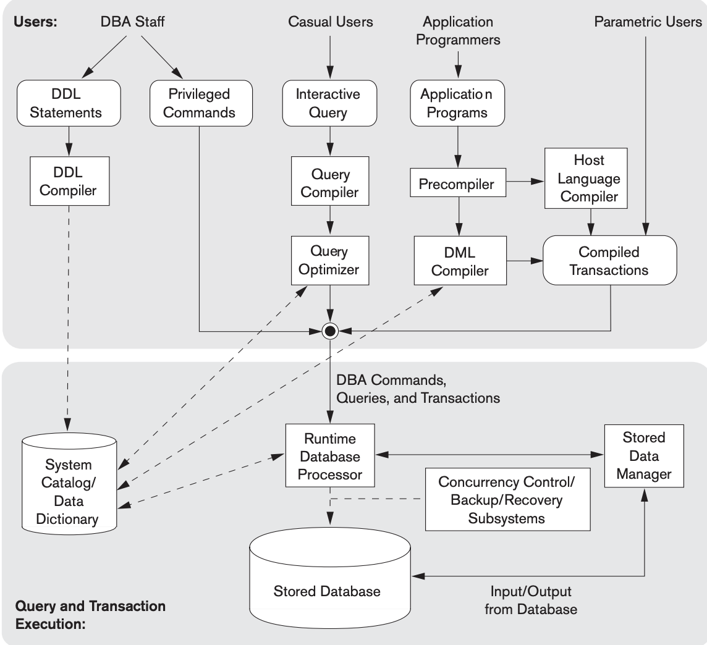

SQL consists of several categories of commands, each responsible for a particular aspect of database management. Separating commands into categories helps developers and database administrators understand when and why a specific command should be used.
Difficulty: Easy
| Abbreviation | Full Form | Purpose | Common Commands |
|---|---|---|---|
| DDL | Data Definition Language | Defines database structure | CREATE, ALTER, DROP |
| DML | Data Manipulation Language | Manipulates data | INSERT, UPDATE, DELETE |
| DQL | Data Query Language | Queries data | SELECT |
| DCL | Data Control Language | Controls permissions | GRANT, REVOKE |
| TCL | Transaction Control Language | Manages transactions | COMMIT, ROLLBACK |
Component modules of a DBMS and their interactions. [1]
 |
We'll start with DDL because we need a database to be created before it can store and manage data.
Next: Creating a database >>
Previous: Introduction <<
References: